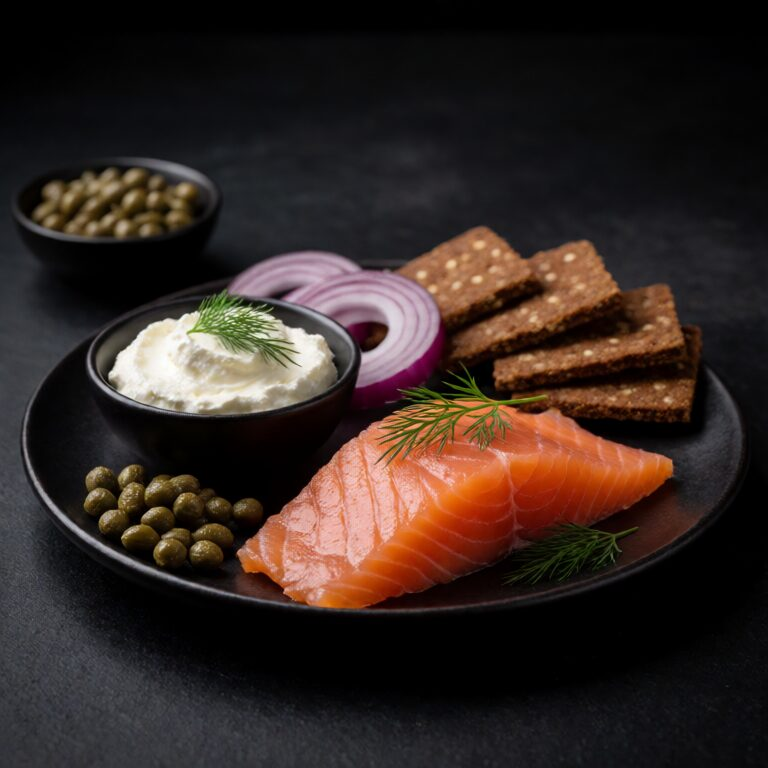
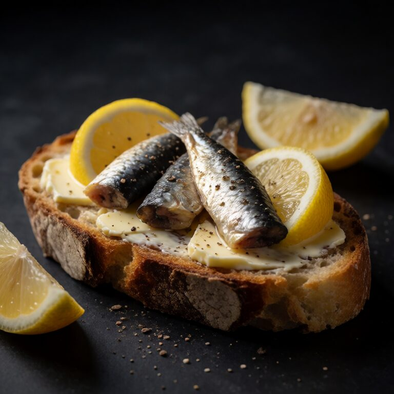
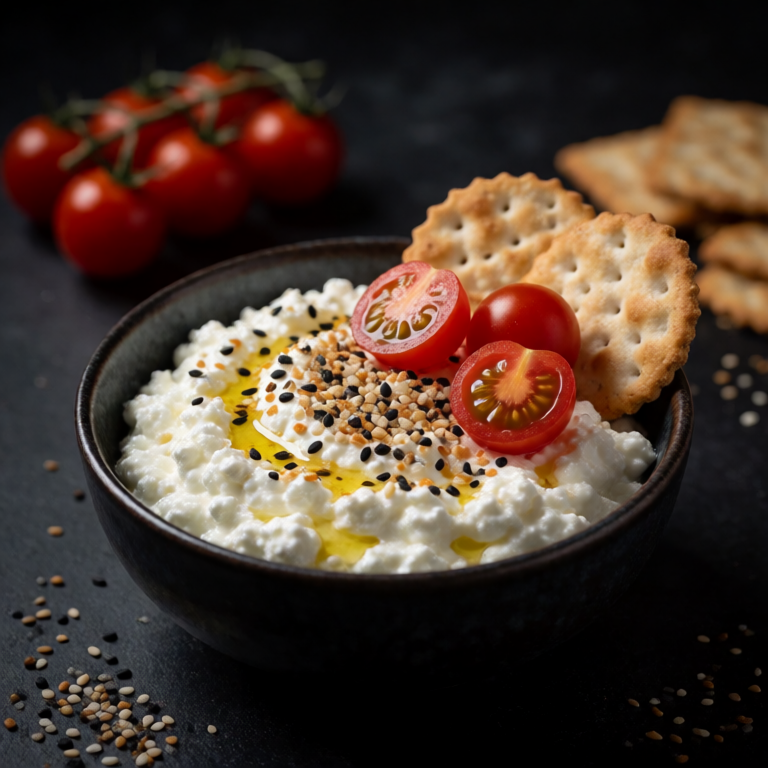
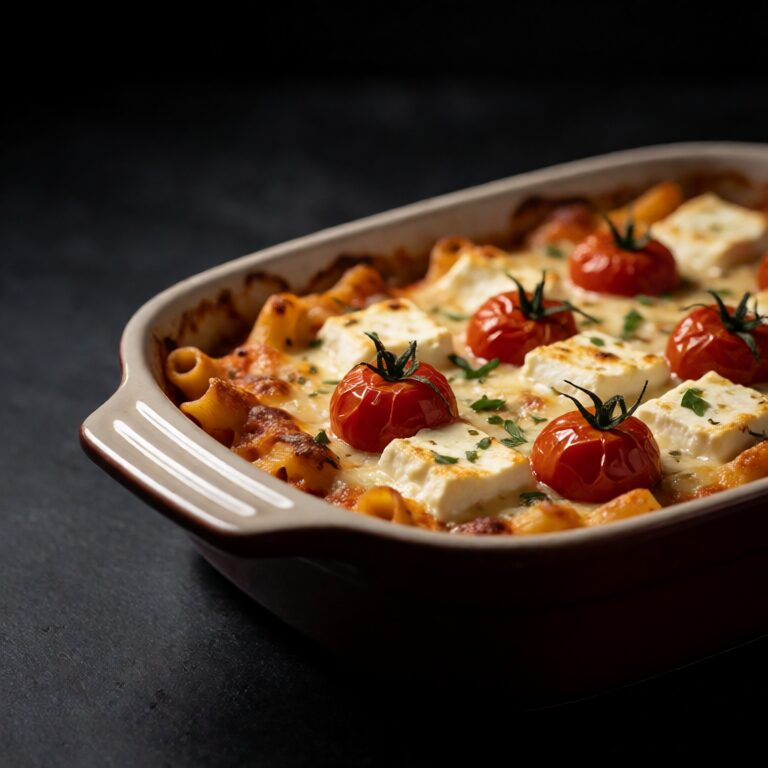
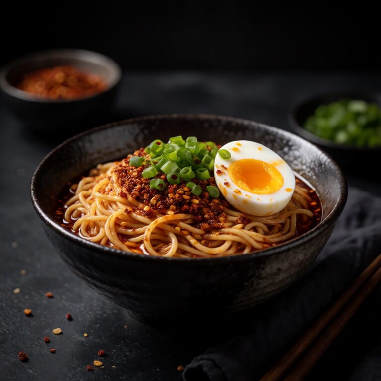
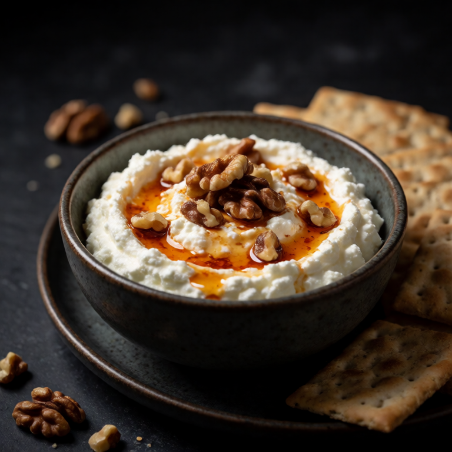
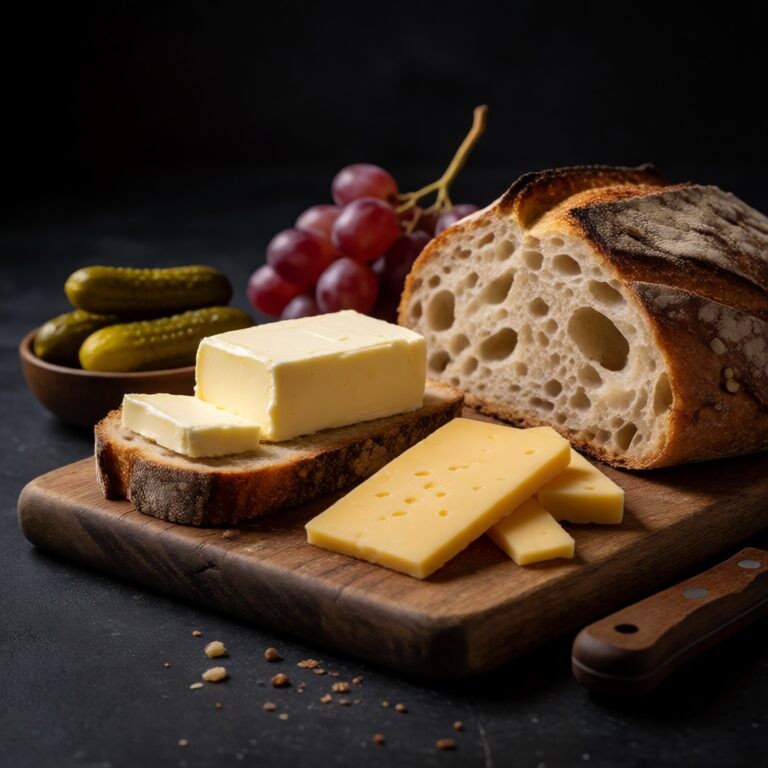

Smoked Salmon Plate with Cream Cheese and Capers
The older issues
Issues published May 1, 2026 through May 8, 2026. Each card opens a complete single-serving recipe. For search and filters across all 152 past recipes, use the searchable archive.

Smoked Salmon Plate with Cream Cheese and Capers

Burrata with Peach and Prosciutto

Tinned Sardines on Buttered Toast

Cottage Cheese and Everything Bagel Plate

Baked Feta Pasta

Chilli Crisp Noodles with Soft-Boiled Egg

Whipped Feta with Hot Honey and Walnuts

The OG Girl Dinner